Guía de Tajador: Nuevas reliquias legendarias en Hero Wars Alliance
- Por: Alexandre Domingos. .
Tajador siempre ha parecido un héroe trofeo: difícil de obtener, imposible de ignorar y reconocible al instante cuando ese enorme gancho arranca al enemigo más lejano de su posición segura. Pero sus nuevas reliquias legendarias cambian la pregunta de "¿Tajador todavía puede cumplir como tanque?" a "¿Hasta qué punto puede un solo tanque alterar toda una batalla?"
Mi respuesta es sencilla: esta es la versión más interesante de Tajador en años. Todavía arrastra a un héroe vulnerable de la retaguardia hacia el peligro, pero ahora puede propagar daño puro, reducir la curación, eliminar efectos negativos de aliados en equipos de Sacrificio y castigar a los enemigos que lo rodean. Veamos dónde está el verdadero valor antes de que gastes los 2,880 fragmentos de reliquia.
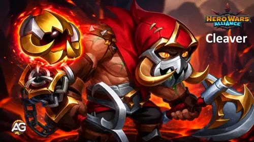
Contenido de la guía de Tajador
¿Quién es Tajador en Hero Wars Alliance?
Tajador es un héroe de Tanque y Control de primera línea del Camino del Caos. Comienza protegiendo al equipo con una enorme reserva de Salud y después vuelve el posicionamiento enemigo en su contra con Gancho oxidado. Cuando un enemigo frágil es arrastrado al frente, el daño puro, el aturdimiento y los aliados cercanos de Tajador pueden destruir la seguridad con la que ese héroe contaba.
- Clase principal: Tanque
- Roles: Tanque, Control
- Posición: Primera línea
- Estadística principal: Fuerza
- Facción: Camino del Caos
- Cómo conseguir Piedras de alma: Cofre heroico
- Mejor sinergia: Kendle, Dorian, Xe'sha, Aidan, Kayla
- Nivel contra Hidra: B
Tajador llega con Estrella absoluta al obtenerlo. La primera gran recompensa después de abrir 400 Cofres heroicos es Tajador, lo que explica por qué desbloquearlo todavía se siente como un hito de la cuenta y no como una invocación común.
Ventajas y desventajas de Tajador - Hero Wars Alliance
Ventajas
- Saca de posición al enemigo más lejano.
- Causa daño puro y ofrece un control cercano confiable.
- Las reliquias legendarias añaden reducción de curación y eliminación de efectos negativos para el equipo.
- Excelente resistencia gracias a Salud, defensas, Tenacidad y Vampirismo.
- Gran sinergia natural con equipos de Sacrificio del Camino del Caos.
Desventajas
- Es extremadamente difícil de obtener antes del hito del Cofre heroico.
- Su mejor utilidad nueva exige una gran inversión de fragmentos de reliquia.
- Putrefacción también daña a Tajador, por lo que el momento de activación y el sustento son importantes.
- Los dos talismanes obligan a elegir realmente entre resistencia bruta y mecánicas de Salud baja.
Comparación de estadísticas máximas de los talismanes de Tajador
| Estadística | 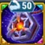 Talismán 1Descomposición |
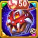 Talismán 2Carnicero |
|---|---|---|
 Inteligencia Inteligencia | 3,739 | 3,739 |
 Agilidad Agilidad | 3,923 | 3,923 |
 Fuerza Fuerza | 20,382 | 18,382 |
 Salud Salud | 1,615,098 | 1,353,598 |
 Ataque Físico Ataque Físico | 100,606 | 98,606 |
 Ataque Mágico Ataque Mágico | 26,323 | 26,323 |
 Armadura Armadura | 54,924.4 | 54,924.4 |
 Defensa Mágica Defensa Mágica | 47,212.5 | 47,212.5 |
 Tenacidad Tenacidad | 6,313 | 12,913 |
 Aplastamiento Aplastamiento | - | 8,000 |
Vampirismo | 55% | 55% |
La diferencia queda perfectamente clara. Descomposición le da a Tajador 261,500 más de Salud y 2,000 más de Ataque Físico. Carnicero otorga 8,000 de Aplastamiento y 6,600 más de Tenacidad. Una configuración ofrece resistencia constante; la otra se vuelve más peligrosa y difícil de rematar por debajo del 50% de Salud.
Prioridad de mejora de las habilidades de reliquia legendaria de Tajador
Las reliquias hacen más que añadir estadísticas: desbloquean habilidades nuevas y mejoran las existentes. Los cálculos siguientes usan la Salud y el Ataque Físico máximos de Tajador con cada talismán, para que puedas ver exactamente cómo cambiar el talismán equipado afecta cada fórmula de daño.
Consejos de Alexandre - Sinergia de las habilidades de reliquia: Tajador funciona especialmente bien con héroes que se infligen daño mediante habilidades propias o aliadas. Su tercer hito de reliquia, Peso pesado legendario, elimina todos los efectos negativos de esos aliados cuando reciben daño de habilidades aliadas, lo que mejora significativamente la supervivencia del equipo.
Mejor sinergia: Kendle, Dorian, Xe'sha, Aidan y Kayla.
Ataque básico
Descripción en el juego: El ataque básico de Tajador causa daño físico hasta que Gancho oxidado convierte sus ataques básicos en daño puro.
Explicación de la habilidad: Un ataque básico causa 100% del Ataque Físico. Después de usar Gancho oxidado, ese mismo valor se causa como daño puro.
Fórmula con el Talismán 1: Talismán de la Descomposición
- Fórmula 1: Daño del ataque: 100,606 (100% del Ataque Físico = 100,606 x 1.00)
Fórmula con el Talismán 2: Talismán del Carnicero
- Fórmula 1: Daño del ataque: 98,606 (100% del Ataque Físico = 98,606 x 1.00)
Información de animación de la habilidad
- Tiempo de recarga: 5.2 segundos
- Retraso de animación: 0.38 segundos
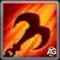
1.ª habilidad - Gancho oxidado
Descripción en el juego: Tajador lanza un gancho al enemigo más lejano, lo atrae y le causa daño puro. Ahora los ataques básicos de Tajador causan daño puro.
Explicación de la habilidad: Gancho oxidado causa daño puro mediante 150% del Ataque Físico + 120 x nivel de la habilidad. En el Nivel 120, la parte correspondiente al nivel añade 14,400 de daño. La verdadera victoria es posicional: un sanador o causante de daño protegido aparece de repente junto a Tajador y el resto de tu primera línea.
Fórmula con el Talismán 1: Talismán de la Descomposición
- Fórmula 1: Daño puro de Gancho oxidado: 165,309 (150% Ataque Físico + 120 x Nivel = 100,606 x 1.50 + 120 x 120)
- Fórmula 2: Daño puro del ataque básico después del Gancho: 100,606 (100% del Ataque Físico)
Fórmula con el Talismán 2: Talismán del Carnicero
- Fórmula 1: Daño puro de Gancho oxidado: 162,309 (150% Ataque Físico + 120 x Nivel = 98,606 x 1.50 + 120 x 120)
- Fórmula 2: Daño puro del ataque básico después del Gancho: 98,606 (100% del Ataque Físico)
Información de animación de la habilidad
- Objetivo: Enemigo más lejano
- Palabras clave: Control, Atracción, Daño puro
Prioridad de evolución: Alta - Esta es la identidad de Tajador y su herramienta de control más decisiva.
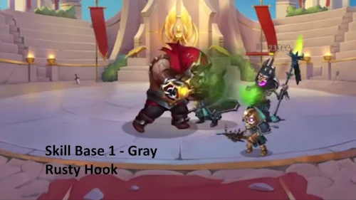
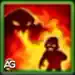
2.ª habilidad - Putrefacción
Descripción en el juego: Causa daño puro a Tajador y a los enemigos cercanos cada 0.5 segundos durante 7.0 segundos.
Explicación de la habilidad: Putrefacción causa 14 impactos de daño a lo largo de siete segundos. Cada impacto usa 5% de Salud + 40 x nivel de la habilidad. En el Nivel 120, la parte fija del nivel es 4,800. Por eso, el Talismán de la Descomposición añade mucho más daño, ya que otorga a Tajador 261,500 de Salud adicional.
Fórmula con el Talismán 1: Talismán de la Descomposición
- Fórmula 1: Daño puro cada 0.5 segundos: 85,555 (5% Salud + 40 x Nivel = 1,615,098 x 0.05 + 40 x 120)
- Fórmula 2: Daño puro total durante 7 segundos: 1,197,769 (85,554.9 x 14 impactos)
Fórmula con el Talismán 2: Talismán del Carnicero
- Fórmula 1: Daño puro cada 0.5 segundos: 72,480 (5% Salud + 40 x Nivel = 1,353,598 x 0.05 + 40 x 120)
- Fórmula 2: Daño puro total durante 7 segundos: 1,014,719 (72,479.9 x 14 impactos)
Información de animación de la habilidad
- Intervalo de impacto: 0.5 segundos
- Duración: 7 segundos
- Impactos: 14
- Palabras clave: Sacrificio, Daño puro
Prioridad de evolución: Media-Alta - El daño puro repetido es valioso, pero la mejora legendaria es la parte que cambia los enfrentamientos.
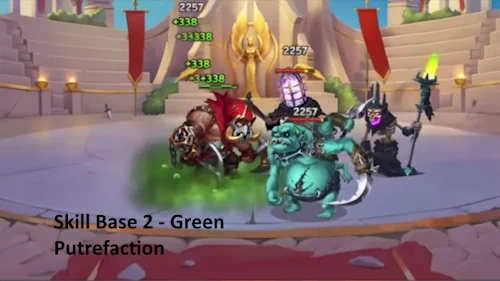
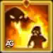
Putrefacción legendaria - Reliquia de Nivel 10
Descripción en el juego: Los enemigos dentro del área de efecto de esta habilidad o afectados por Miasma restauran un 60% menos de Salud para sí mismos y sus aliados. Si un enemigo está afectado por ambos efectos, la reducción de curación se duplica.
Explicación de la habilidad: Esta es la mejora de reliquia más importante de Tajador. Putrefacción controla a los enemigos que lo rodean, mientras Miasma lleva el efecto negativo al centro de la formación. Cuando ambos efectos se superponen, la reducción indicada se duplica. Un tanque capaz de reposicionar, sobrevivir y limitar la recuperación crea el tipo de presión que obliga al equipo enemigo a derrumbarse.
Consejos de Alexandre - Putrefacción: Putrefacción y Miasma debilitan gravemente la curación enemiga. Cuando ambos efectos se superponen, la reducción duplicada impide en la práctica que los enemigos afectados se curen a sí mismos o a sus aliados.
Muy eficaz contra: Byrna, Aidan y Dorian.
Fórmula con el Talismán 1: Talismán de la Descomposición
- Fórmula 1: Reducción de curación: 60% con un efecto; 120% cuando Putrefacción y Miasma se superponen (60% x 2)
Fórmula con el Talismán 2: Talismán del Carnicero
- Fórmula 1: Reducción de curación: 60% con un efecto; 120% cuando Putrefacción y Miasma se superponen (60% x 2)
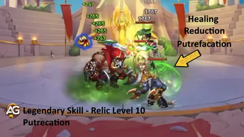
Prioridad de evolución: Muy Alta - El Nivel 10 es el primer gran objetivo porque completa la función estratégica de Miasma.
Información de desbloqueo de la reliquia en el Nivel 10
| Información | Valor |
|---|---|
| Fragmentos de reliquia necesarios (Niveles 2-10) |  280 280 |
| Total de fragmentos de reliquia necesarios (Niveles 0-10) | 330 |
| Bonificación total de Ataque Físico (Niveles 0-10) | +6,956 |
| Bonificación total de Salud (Niveles 0-10) | +53,269 |
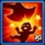
3.ª habilidad - Mutilación
Descripción en el juego: Golpea frente a sí mismo, aturde a los enemigos cercanos durante 2.0 segundos y causa daño puro. La probabilidad de aturdir se reduce si el nivel del objetivo es superior a 120.
Explicación de la habilidad: Mutilación es el castigo después de Gancho oxidado. Su daño puro usa 40% del Ataque Físico + 30 x (nivel de la habilidad + 20). En el Nivel 100, el componente de nivel añade 3,600 de daño antes de tener en cuenta el aturdimiento de dos segundos.
Fórmula con el Talismán 1: Talismán de la Descomposición
- Fórmula 1: Daño puro: 43,842 (40% Ataque Físico + 30 x (Nivel + 20) = 100,606 x 0.40 + 30 x (100 + 20))
Fórmula con el Talismán 2: Talismán del Carnicero
- Fórmula 1: Daño puro: 43,042 (40% Ataque Físico + 30 x (Nivel + 20) = 98,606 x 0.40 + 30 x (100 + 20))
Información de animación de la habilidad
- Duración del aturdimiento: 2 segundos
- Área: Enemigos cercanos frente a Tajador
- Palabras clave: Aturdimiento, Control, Daño puro
Prioridad de evolución: Alta - Dos segundos de control pueden decidir si el enemigo atrapado escapa o desaparece.
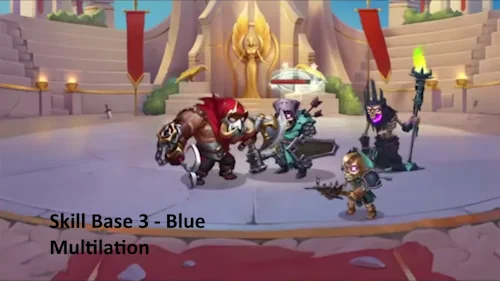
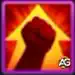
4.ª habilidad - Peso pesado
Descripción en el juego: Pasiva. Tajador obtiene Fuerza adicional.
Explicación de la habilidad: En el nivel máximo, Tajador obtiene +4,800 de Fuerza. Como Fuerza es su estadística principal, esta base refuerza tanto su reserva de Salud como su Ataque Físico antes de que la mejora de reliquia añada utilidad para el equipo.
Fórmula con el Talismán 1: Talismán de la Descomposición
- Fórmula 1: Bonificación de Fuerza: +4,800
- Estadísticas derivadas: +192,000 de Salud (4,800 x 40) y +4,800 de Ataque Físico
Fórmula con el Talismán 2: Talismán del Carnicero
- Fórmula 1: Bonificación de Fuerza: +4,800
- Estadísticas derivadas: +192,000 de Salud (4,800 x 40) y +4,800 de Ataque Físico
Prioridad de evolución: Muy Alta - Un tanque necesita su base defensiva principal antes de las mejoras de daño especializadas.
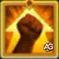
Peso pesado legendario - Reliquia de Nivel 20
Descripción en el juego: Cuando Tajador o sus aliados reciben daño de sus propias habilidades o de habilidades aliadas, todos los efectos negativos se eliminan del héroe dañado. Esta habilidad permanece activa mientras Tajador esté vivo.
Explicación de la habilidad: Por eso veo al nuevo Tajador como un tanque de apoyo, no solo como un muro más grande. Los aliados del Caos como Aidan, Kayla, Kendle, Dorian, Lilith y Xe'sha usan interacciones de Sacrificio. Cuando se activa el daño aliado, Peso pesado elimina los efectos negativos del héroe dañado mientras Tajador permanezca vivo. También puede eliminar efectos peligrosos como Fuego interior de Iris.
Consejos de Alexandre - Peso pesado: ¡Olvídate de los efectos negativos! Tajador puede eliminarlos de sí mismo y de sus aliados, incluidos aturdimientos, silencios, efectos de Debilidad e incluso los efectos de quemadura provocados por Iris. Esta habilidad se vuelve especialmente poderosa junto a Xe'sha o Aidan.
Funciona muy bien con: Kendle, Dorian, Aidan y Xe'sha.
Muy eficaz contra: Iris, Tempus y Phobos.
Efecto con el Talismán 1: Talismán de la Descomposición
- Efecto legendario: Elimina todos los efectos negativos cuando se recibe daño de una habilidad aliada
Efecto con el Talismán 2: Talismán del Carnicero
- Efecto legendario: Elimina todos los efectos negativos cuando se recibe daño de una habilidad aliada
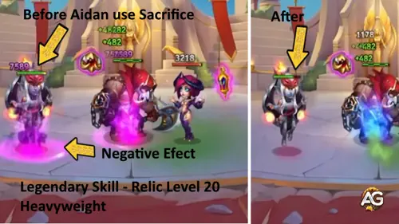
Prioridad de evolución: Muy Alta en equipos de Sacrificio; Media fuera de ellos. El efecto es extraordinario cuando tu composición puede activarlo de forma confiable.
Información de desbloqueo de la reliquia en el Nivel 20
| Información | Valor |
|---|---|
| Fragmentos de reliquia necesarios (Niveles 11-20) | 800 |
| Total de fragmentos de reliquia necesarios (Niveles 0-20) | 1,130 |
| Bonificación total de Ataque Físico (Niveles 0-20) | +19,176 |
| Bonificación total de Salud (Niveles 0-20) | +146,854 |
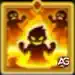
5.ª habilidad - Miasma legendaria: Reliquia de Nivel 1
Descripción en el juego: Aplica un efecto al enemigo central durante 7.0 segundos que causa daño puro a todos los enemigos a su alrededor cada 0.5 segundos. Si Putrefacción está mejorada, los enemigos también sufren un efecto que reduce su curación.
Explicación de la habilidad: Miasma es un nuevo efecto de daño prolongado de siete segundos con 14 impactos. Cada impacto causa 25% del Ataque Físico de Tajador como daño puro. El enemigo central se convierte en la fuente de presión, por lo que las formaciones agrupadas pagan el precio. En el Nivel 10 de la reliquia, Miasma también aplica la reducción de curación de Putrefacción.
Consejos de Alexandre - Miasma: Esta habilidad permite que Tajador inflija mucho daño prolongado alrededor del objetivo central y puede alcanzar a casi todo el equipo enemigo cuando la formación está agrupada.
Fórmula con el Talismán 1: Talismán de la Descomposición
- Fórmula 1: Daño puro cada 0.5 segundos: 25,152 (25% Ataque Físico = 100,606 x 0.25)
- Fórmula 2: Daño puro total durante 7 segundos: 352,121 (25,151.5 x 14 impactos)
Fórmula con el Talismán 2: Talismán del Carnicero
- Fórmula 1: Daño puro cada 0.5 segundos: 24,652 (25% Ataque Físico = 98,606 x 0.25)
- Fórmula 2: Daño puro total durante 7 segundos: 345,121 (24,651.5 x 14 impactos)
Información de animación de la habilidad
- Objetivo: Enemigo central
- Intervalo de impacto: 0.5 segundos
- Duración: 7 segundos
- Impactos: 14
- Palabras clave: Daño prolongado, Efecto negativo, Daño puro
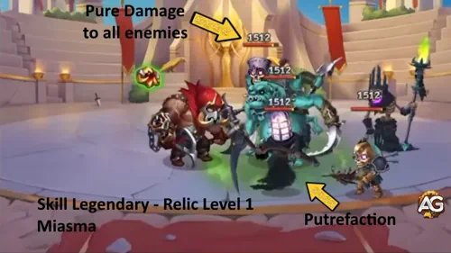
Prioridad de evolución: Muy Alta - Es el primer desbloqueo y solo cuesta 50 fragmentos; obtenlo de inmediato si estás invirtiendo en la reliquia de Tajador.
Información de desbloqueo de la reliquia en el Nivel 1
| Información | Valor |
|---|---|
| Fragmentos de reliquia necesarios (Niveles 0-1) | 50 |
| Bonificación total de Ataque Físico (Niveles 0-1) | +3,760 |
| Bonificación total de Salud (Niveles 0-1) | +28,794 |
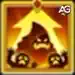
6.ª habilidad - Carnicería legendaria: Reliquia de Nivel 30
Descripción en el juego: Ahora Tajador causa más daño por cada enemigo que lo rodea.
Explicación de la habilidad: Carnicería otorga un aumento de daño del 20% por cada enemigo cercano. Encaja con todo el plan de Tajador: Gancho oxidado añade otra víctima a su área inmediata, Putrefacción daña esa área y Mutilación la controla. Cuanto más concurrida esté la primera línea, más temible se vuelve Tajador.
Consejos de Alexandre - Carnicería: Tajador ya inflige una cantidad increíble de daño puro, y Carnicería lo aumenta todavía más. Como la bonificación aumenta todo el daño que causa, fortalece todas sus habilidades ofensivas y no solo una habilidad específica.
Fórmula con el Talismán 1: Talismán de la Descomposición
- Fórmula 1: Aumento de daño: 20% x enemigos cercanos (1 = 20%, 2 = 40%, 3 = 60%, 4 = 80%, 5 = 100%)
Fórmula con el Talismán 2: Talismán del Carnicero
- Fórmula 1: Aumento de daño: 20% x enemigos cercanos (1 = 20%, 2 = 40%, 3 = 60%, 4 = 80%, 5 = 100%)
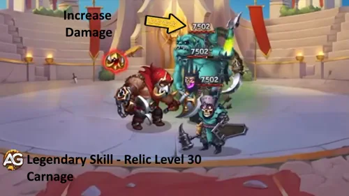
Prioridad de evolución: Media - El daño es atractivo, pero la etapa final de 1,750 fragmentos cuesta más que los Niveles 1 a 20 juntos. La utilidad va primero.
Información de desbloqueo de la reliquia en el Nivel 30
| Información | Valor |
|---|---|
| Fragmentos de reliquia necesarios (Niveles 21-30) | 1,750 |
| Total de fragmentos de reliquia necesarios (Niveles 0-30) | 2,880 |
| Bonificación total de Ataque Físico (Niveles 0-30) | +37,976 |
| Bonificación total de Salud (Niveles 0-30) | +290,824 |
Resumen de costos de las reliquias de Tajador
| Hito | Habilidad | Costo de la etapa | Costo total | Mi prioridad |
|---|---|---|---|---|
| Nivel 1 | Miasma | 50 | 50 | Muy Alta |
| Nivel 10 | Putrefacción legendaria | 280 | 330 | Muy Alta |
| Nivel 20 | Peso pesado legendario | 800 | 1,130 | Alta |
| Nivel 30 | Carnicería | 1,750 | 2,880 | Media |
Guía de talismanes de Tajador - Hero Wars Alliance
Los talismanes son diferentes de las skins: solo el talismán equipado aplica sus bonificaciones en batalla. Esto lo convierte en una verdadera decisión de configuración, no en una preferencia cosmética.
1 - Talismán de la Descomposición
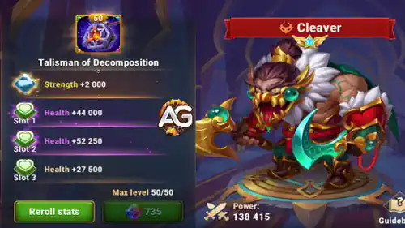
En el Nivel 50, este talismán otorga +2,000 de Fuerza. Para Tajador, eso significa +80,000 de Salud y +2,000 de Ataque Físico. Sus tres reajustes de Salud alcanzan +60,500 cada uno, pero lo importante es su valor combinado de +181,500 de Salud. En conjunto, la estadística principal y los reajustes explican la ventaja total de +261,500 de Salud visible en la tabla comparativa.
|
1 - Talismán de la Descomposición |
Estadística principal total |
|---|---|
Fuerza |
+2,000 |
| Ranura 1 | Ranura 2 | Ranura 3 | Bonificación total de reajuste |
|---|---|---|---|
Salud +60,500 |
Salud +60,500 |
Salud +60,500 |
Salud +181,500 |
2 - Talismán del Carnicero
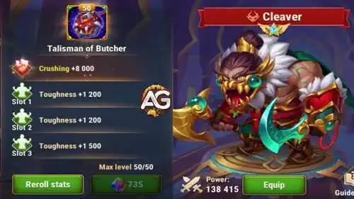
Esta alternativa otorga +8,000 de Aplastamiento en su ranura principal y tres reajustes de Tenacidad de +2,200 cada uno, para un total de +6,600 de Tenacidad. Aplastamiento aumenta el daño Físico, Mágico y Puro causado a enemigos con menos del 50% de Salud. Tenacidad reduce esos tipos de daño recibido mientras Tajador está por debajo del 50% de Salud. La pérdida de Salud causada por habilidades aliadas queda excluida de ambas mecánicas.
|
2 - Talismán del Carnicero |
Estadística principal total |
|---|---|
Aplastamiento |
+8,000 |
| Ranura 1 | Ranura 2 | Ranura 3 | Bonificación total de reajuste |
|---|---|---|---|
Tenacidad +2,200 |
Tenacidad +2,200 |
Tenacidad +2,200 |
Tenacidad +6,600 |
Elección de Alexandre: Recomiendo el Talismán de la Descomposición para la mayoría de las batallas. La Salud adicional fortalece el papel de tanque de Tajador y el daño puro de Putrefacción basado en Salud, mientras Fuerza también añade Ataque Físico al escalado de Gancho oxidado, Mutilación y Miasma. Elige Carnicero cuando busques deliberadamente una configuración más arriesgada con Salud baja, centrada en Aplastamiento y Tenacidad.
Fórmula de Aplastamiento: (Aplastamiento / (Aplastamiento + estadística principal del objetivo)) * 100%
Fórmula de Tenacidad: (Tenacidad / (Tenacidad + estadística principal del enemigo)) * 100%
Mejores skins para Tajador - Hero Wars Alliance
Todas las bonificaciones de skins desbloqueadas permanecen activas, así que esta sección trata del orden de inversión. Tajador primero necesita defensas suficientes para seguir con vida; su daño solo importa mientras continúe controlando el campo de batalla.
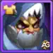
1.ª - Skin de Mascarada: Armadura +10,650
Muy Alta: Armadura es la primera respuesta contra equipos físicos y ayuda a Tajador a permanecer en pie el tiempo suficiente para atraer y aturdir.
2.ª - Skin de Playa: Defensa Mágica +10,650
Muy Alta: Defensa Mágica cubre el otro gran perfil de daño y completa su base como tanque.
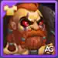
3.ª - Skin de Bárbaro: Salud +106,645
Alta: Salud mejora la supervivencia, el escalado de Putrefacción y la bonificación de la clase Tanque.
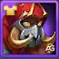
4.ª - Skin Predeterminada: Fuerza +1,365
Alta: La estadística principal también proporciona +54,500 de Salud y +1,365 de Ataque Físico.
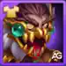
5.ª - Skin Lunar: Tenacidad +2,960
Media: Tenacidad es útil por debajo del 50% de Salud, especialmente con la configuración Carnicero, pero se activa más tarde que las defensas comunes.
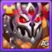
6.ª - Skin de Campeón: Ataque Físico +7,117
Baja: Más daño es bienvenido, pero Tajador es tu tanque. Completa primero las prioridades defensivas.
Prioridad de evolución de los artefactos de Tajador - Hero Wars Alliance
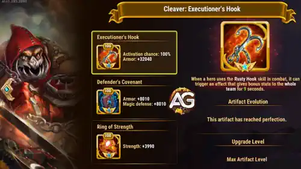
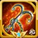
1.º - Gancho del Verdugo
Con seis estrellas y en el Nivel 100, el artefacto de arma de Tajador otorga al equipo Armadura +32,040 con una probabilidad de activación del 100%. Es la primera prioridad porque una habilidad definitiva puede proteger inmediatamente a todo el equipo de la represalia física.

2.º - Pacto del Defensor
El libro añade Armadura +8,010 y Defensa Mágica +8,010. Ambas estadísticas siempre son importantes para un tanque de primera línea, lo que convierte esta en la mejora de supervivencia personal más equilibrada.

3.º - Anillo de Fuerza
El anillo otorga Fuerza +3,990, lo que proporciona +159,600 de Salud y +3,990 de Ataque Físico a Tajador. Es excelente, pero los efectos defensivos de los artefactos van primero.
Prioridad de evolución de los glifos de Tajador
Las entradas siguientes mantienen su orden dentro del juego, con mi prioridad recomendada indicada para cada una.
Glifo de Ataque Físico: +8,340
Baja, 5.ª prioridad: Mejora varias habilidades de daño puro, pero la supervivencia es más valiosa al principio.
Glifo de Armadura: +12,850
Muy Alta, 1.ª prioridad: Los atacantes físicos golpean constantemente la primera línea, por lo que Armadura ofrece valor inmediato.
Glifo de Salud: +122,800
Muy Alta, 2.ª prioridad: Salud refuerza la supervivencia de Tajador, Putrefacción y el efecto de la clase Tanque.
Glifo de Defensa Mágica: +12,850
Alta, 3.ª prioridad: Esto evita que el daño explosivo mágico atraviese una defensa física que, por lo demás, es sólida.
Glifo de Fuerza: +2,110
Alta, 4.ª prioridad: También aporta +84,400 de Salud y +2,110 de Ataque Físico.
Glifo de la clase Tanque: Cada 10 segundos, Tajador aplica un efecto al aliado con el menor porcentaje de Salud. Aumenta la Armadura y la Defensa Mágica de ese aliado en 35,377.74 (1% Salud + 24,750) durante cinco segundos y puede tener como objetivo al propio Tajador.
Don de los Elementos
En el Nivel 30, Don de los Elementos otorga a Tajador +720 de Fuerza, +360 de Agilidad, y +360 de Inteligencia. Es una inversión permanente y directa en estadísticas cuando tus recursos diarios principales lo permitan.
Mecánicas de Tajador que debes comprender
- Vampirismo: Tajador tiene 55% de Vampirismo y se cura un porcentaje del daño causado por ataques básicos o habilidades.
- Aplastamiento: aumenta el daño Físico, Mágico y Puro causado a enemigos con menos del 50% de Salud.
- Tenacidad: reduce el daño Físico, Mágico y Puro recibido mientras Tajador está por debajo del 50% de Salud.
- Excepción de Sacrificio: Aplastamiento y Tenacidad no se aplican a la pérdida de Salud causada por habilidades aliadas.
- Reino: Tajador proporciona una bonificación de Ataque/Defensa de Infantería del 120% y actualmente no tiene habilidades de Reino.
Cómo contrarrestar a Tajador en Hero Wars Alliance
Gancho oxidado de Tajador pretende romper la formación enemiga, pero el counter correcto puede volver esa atracción en su contra. Estos cuatro héroes detienen el desplazamiento, protegen a su objetivo o se vuelven todavía más peligrosos cuando Tajador los lleva a la primera línea.

Andvari anula el principal recurso de posicionamiento de Tajador. Tierra viva protege del desplazamiento a los aliados situados detrás de Andvari, por lo que Gancho oxidado no puede arrastrar al héroe protegido de la retaguardia hasta el alcance de Mutilación y Putrefacción de Tajador. Su escudo defensivo también ayuda al equipo a sobrevivir al daño puro repetido de Tajador mientras concentran sus ataques en él.

Dorian es uno de los peores héroes que Tajador puede atraer. Cuando Gancho oxidado lleva a Dorian al frente, su Aura de Vampirismo se desplaza con él y alcanza al tanque y a los causantes de daño físico cercanos. En lugar de aislar a un apoyo frágil, Tajador puede crear una primera línea con una supervivencia brutal, cuyos ataques restauran Salud constantemente mientras lo castigan a corta distancia.

Fafnir protege al causante de daño de Agilidad que Tajador quiere aislar. Escudo rúnico puede impedir que el aliado protegido muera cuando se activa y después absorber el daño recibido. Espada rúnica también otorga el doble de su bonificación normal de daño físico al atacar a un héroe de Fuerza como Tajador, lo que ayuda al atacante protegido a atravesar su enorme reserva de Salud antes de que él pueda ganar la batalla prolongada.

Atraer a Martha puede volver al enemigo de Tajador más rápido y difícil de matar. Una vez arrastrada al combate activo de la primera línea, Martha recibe daño y obtiene Energía más rápido, lo que le permite responder con Juramento de la Antepasada y acelerar a todo su equipo. Su curación constante mantiene después a la primera línea en combate, por lo que el intento de Tajador de retirar a la sanadora de la retaguardia puede convertirla en el motor del contraataque.
Mejores equipos para Tajador en 2026 - Hero Wars Alliance
Equipo 1 - Máxima presión de Sacrificio del Caos
Aidan, Kendle, Peech, Kayla, Tajador
Esta es mi nueva dirección favorita para Tajador. Kayla aporta una presión agresiva de Sacrificio, Aidan sostiene el ciclo de supervivencia del equipo y Kendle y Peech añaden más interacciones del Caos. Tajador usa aquí el Talismán 1 porque la Salud adicional fortalece la primera línea y Putrefacción. Cuando Peso pesado legendario está activo, el daño de habilidades aliadas también puede eliminar los efectos negativos de los héroes afectados.
| Tajador - Mejor equipo 2026 #1 | ||||
|---|---|---|---|---|
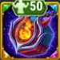 Talismán 2 |
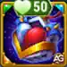 Talismán 2 |
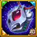 Talismán 2 |
Talismán 1 | |
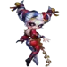 Peech |
Tajador | |||
Equipo 2 - Vampirismo y Caos sostenido
Aidan, Kendle, Dorian, Peech, Tajador
Dorian sustituye a Kayla cuando buscas una batalla más paciente. Su presencia complementa el 55% de Vampirismo del propio Tajador, mientras Aidan, Kendle y Peech mantienen intacta la identidad de Sacrificio. Esta versión da a Tajador más tiempo para alternar Gancho, Putrefacción y Mutilación en lugar de apostarlo todo a la presión inicial.
| Tajador - Mejor equipo 2026 #2 | ||||
|---|---|---|---|---|
| Talismán 2 | 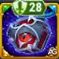 Talismán 2 |
Talismán 2 | Talismán 1 | |
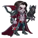 Dorian |
Peech | Tajador | ||
Mejores sinergias de Tajador
- Aidan: apoya la supervivencia del Caos y participa en la estrategia de Sacrificio que se beneficia de Peso pesado legendario.
- Kendle: encaja en el mismo ecosistema de daño aliado y aparece en los dos equipos recomendados.
- Peech: aporta otro compañero constante del Caos en ambas composiciones probadas.
- Kayla: vuelve agresivo al equipo y ayuda a crear los eventos de daño propio que necesita la eliminación de efectos negativos de Tajador.
- Dorian: favorece el combate prolongado, lo que permite que el daño puro repetido y el control de Tajador acumulen valor.
Veredicto final de Alexandre
Las nuevas reliquias de Tajador no reemplazan aquello que lo hizo famoso; por fin construyen una estrategia moderna a su alrededor. Miasma convierte el posicionamiento enemigo en presión de área, Putrefacción ataca el sustento, Peso pesado ofrece a los equipos de Sacrificio del Caos una eliminación de efectos negativos inusualmente natural y Carnicería recompensa exactamente la concentración de enemigos que Tajador crea con su gancho.
Para la mayoría de los jugadores, el Nivel 10 de la reliquia es el objetivo con mejor relación costo-beneficio. El Nivel 20 es el destino competitivo para equipos dedicados al Caos. El Nivel 30 es el acabado de lujo: poderoso, satisfactorio y muy caro. Combina ese camino con el Talismán de la Descomposición y Tajador se convierte en algo más que un premio nostálgico del cofre. Se convierte en la razón por la que la retaguardia enemiga nunca se siente segura.
Explora nuevas habilidades con nuestros héroes destacados


¡Deja tu opinión!
¿Te gustó nuestra guía de Tajador para Hero Wars Alliance? ¿Qué nivel de reliquia y qué talismán estás usando? Participa en los comentarios del Blog de Alexandre Games para compartir tus resultados, preguntas e ideas de equipo.
Haz clic en el botón de abajo para comenzar: